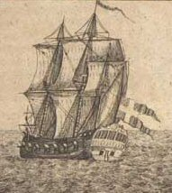

Monday, April the 17th, 2006
back to: title, date or indexes
Today's quotation, which you will have read attentively, is from Frederick Arthur Ambrose Talbot's 1917 memoir Sixteen Months In Four German Prisons. Dobson was a great admirer of this book and planned to write a sequel entitled Four Months In Sixteen German Prisons. To this end, he arrived in Ülm on a bright spring morning and began to write an inflammatory pamphlet, hoping to be placed under arrest. His plan succeeded brilliantly, and by midday he had been banged up in the jug. He lay back on the cold stone bench in his cell and smiled. Then, before a guard arrived with a tin bowl of evil-looking and worse-smelling soup, the pamphleteer took from a secret compartment in his shoe a notepad and pencil and wrote: Day one. In prison in Ülm. One down, fifteen prisons to go. Soup due soon.
At the time of which I write, Dobson was young and impetuous, and he had not bothered to research the German penal system, particularly that part of it related to the transfer of convicts between prisons. He was later to reflect ruefully on his naïvety. I thought I would be able to get myself moved from prison to prison just by asking nicely, he wrote, but I reckoned without the inhuman, mechanically creaking wheels of Teutonic jurisprudence.
It must be said that this is a somewhat melodramatic evasion. What actually happened was that, hauled before a court within two hours of his incarceration, Dobson was condemned as an “idiotic nuisance” and ejected from the country. He was placed on a prison ship which sailed him home in time for tea.

A ship a bit like the one that sailed Dobson home from prison
Hooting Yard on the Air, April the 14th, 2016 : “Dobson the Convict” (starts around 00:14)